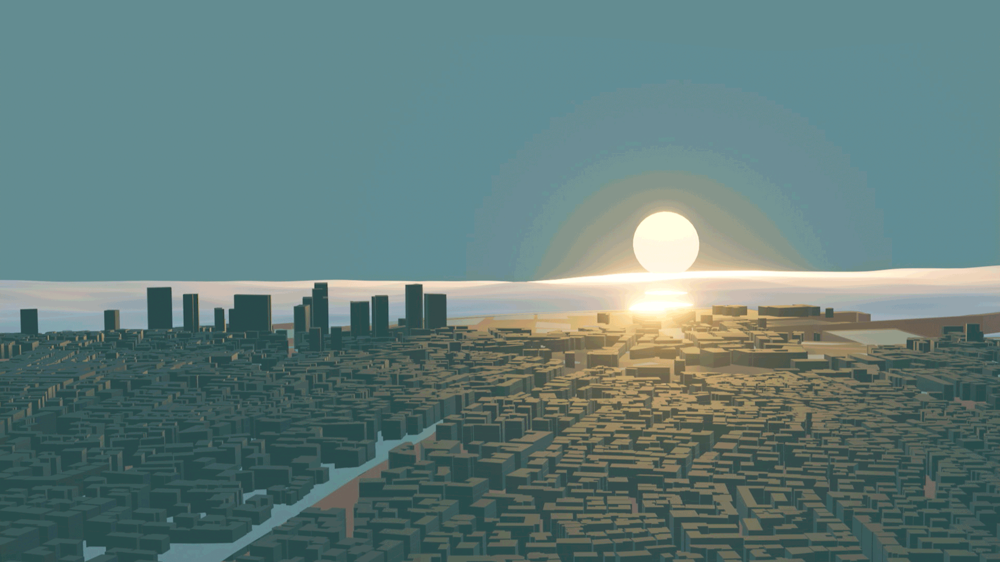
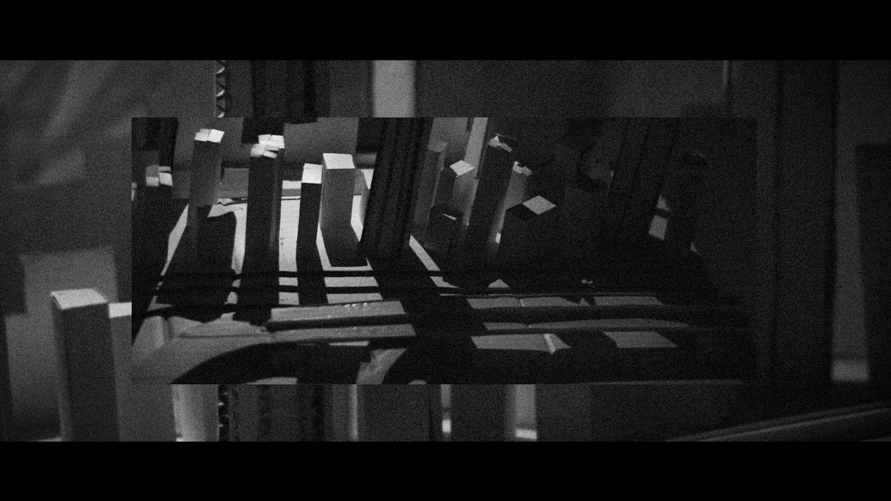
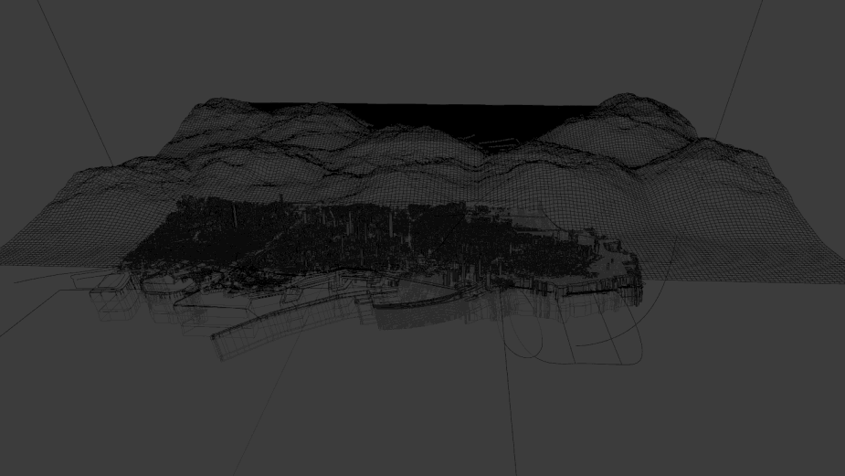

After the explosion of the port of Beirut on August 4th, 2020, seemed important to spread awareness and not to forget this tragedy thus the idea of making a short movie.
In order to make it come true, it was decided to tell the story of Sahar who died in the explosion.
This story and the mourning of her loved ones by Sahar.
The desired effect was that of a documentary. A specific work on Typography was prepared to enhance the atmosphere.
Then came the work on the Scenography. Which kind of atmosphere should be created for the first and second part of the short movie.
And then the content as to know what going to be filmed.The Model was firstly made, then The 3D Map.
This 3-week work was carried out by students in Interactive Design of Gobelins:
- Danny Lahcene
- Ludwig Pilicer
- Bartholomé Chassac
- Ambroise Nicolao
All the different tasks have been listed in this section.
Marked by the dramatic situation of Beirut, our documentary project combines storytelling, 3D model creation, real model, audio and video editing...
The viewer discovers the story of Sahar, a young rescuier who lost her life during the devastating explosion.
The division of the world - "soft" or "clean" - of 3D and that of the rough and dark model marks the rupture that this explosion has caused in the lives of the Lebanese. The effort was focused on the attachment to Sahar through the voice-over and the narrative weave.
For this short film, we decided to create two very different atmospheres.
- A first part in 3D made on Blender.
- A second part made from a model then filmed on a camera.
All this in a documentary style so as not to get away from the reality of this event.
All images are processed with 2.35:1 cinemascope with grain, in addition to a special filter for each of the two sections.


3D Map
This project required the creation of a 3D model of Beirut that would serve as a background to illustrate our story. We had no experience with 3D softwares, this project allowed us to discover, explore and understand the features of Blender. Our skills in 3D modeling and self-training have increased considerably thanks to our curiosity and our work.
Technically, we first decided to get a picture of Beirut seen from the sky and to transform this 2D surface in a 3D model by extruding and modeling it as faithfully as possible. During the 3rd session, we discovered a plug-in that allowed us to reproduce a city from an aerial view.

The addition of sea, beach, mountain and sun completed the creation of the model.
Model
Based on the map available on Google maps, we built a post-explosion version of the port of Beirut.
The full dimensions of the model are 1m60 by 60cm.
It was mainly made from recovery material, then painted with a white spray to homogenize the whole surface.
We improvised a studio to get a decent set during the shooting.
Concept - Art Direction - Script - Storyboard - Conception and production of the model - Model Filming - 3D Map - 3D Filming - Editing - Colorimetry - Voice Acting - Documentation - Website
Concept - Art Direction - Script - Storyboard - Conception and production of the model - Model Filming - 3D Map - 3D Filming - Editing - Colorimetry - Voice Acting - Documentation - Website
Concept - Art Direction - Script - Storyboard - Conception and production of the model - Model Filming - 3D Map - 3D Filming - Editing - Colorimetry - Voice Acting - Documentation - Website
Concept - Art Direction - Script - Storyboard - Conception and production of the model - Model Filming - 3D Map - 3D Filming - Editing - Colorimetry - Voice Acting - Documentation - Website
Contact
ambroise.nicolao@gmail.com
Special thanks
Our teachers C. Porri and P-Y Le Sonn and at Gobelins for this project.
Angel Belegue in the role of Sahar.
Sams for her wisdom and to Marie Olete for her smile.
Hyacinthe Nicolao for his help in developing the website.
Donation for Beirut
Beirut, August 11, 2020 - According to UNICEF estimates, nearly 100,000 children have been displaced as a result of Beirut's explosions. Affected families are in desperate need of help. Tuesday night's explosions left 171 people dead, more than 6,000 injured and hundreds missing. UNICEF is very concerned about the situation of many children who have suffered trauma and are still in shock.
"Over the past 24 hours, UNICEF has continued to coordinate closely with authorities and partners on the ground to respond to the urgent needs of affected families. Our focus has been on the health, water and safety of children"
explains Violet Speek-Warnery, UNICEF Deputy Representative in Lebanon.
The port of Beirut - where the explosion took place - represents the neuralgic center of the country. It is now completely destroyed.